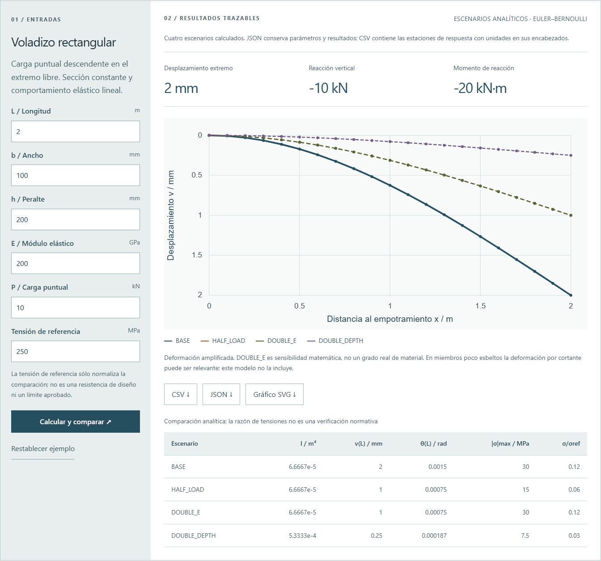

Un voladizo. Parámetros que explican la respuesta.
Equilibrio, rigidez, desplazamiento y esfuerzos con una solución analítica.
Explora una viga rectangular de Euler–Bernoulli bajo carga puntual y compara escenarios. El ejemplo permite contrastar resultados con fórmulas y pruebas independientes.
Voladizo rectangular
Carga puntual descendente en el extremo libre. Sección constante y comportamiento elástico lineal.
Qué se calcula.
Cómo se comprueba.
La interfaz ejecuta una implementación JavaScript ligera. Los módulos Python descargables procesan los mismos ejemplos; pruebas de paridad comparan ambas salidas. No hay conexión activa con ETABS o SAP2000.
Para ejecutar el módulo, conserva _common.py en el mismo directorio y descarga también el CSV de ejemplo. El repositorio incluye ambos módulos, ejemplos y pruebas. _common.py ↓
Euler–Bernoulli
v(x) = Px²(3L − x) / (6EI)
θ(x) = Px(2L − x) / (2EI)
v(L) = PL³ / (3EI)
σ(x) = M(x)h / (2I)
x se mide desde el empotramiento. La carga y el desplazamiento se toman positivos hacia abajo; V=P y M=P(L−x) siguen la convención interna declarada. Las reacciones son −P y −PL. El gráfico de deformación está amplificado y no representa la geometría deformada a escala.
El ejemplo inicial produce 2,00 mm de desplazamiento, 0,0015 rad de giro y 30 MPa de tensión extrema. Al duplicar el peralte, la inercia aumenta ocho veces y la flecha disminuye a un octavo. No se incluyen peso propio, deformación por cortante, plasticidad, pandeo, conexiones ni verificaciones normativas.
Ejecutar Python y revisar pruebas
cd python
python cantilever.py examples/cantilever-scenarios.csv --json results.json --csv results.csv
python -m unittest discover -s tests -vDocumentación, validaciones y limitaciones ↗
Ejemplo didáctico de 2026, independiente de trabajos para empleadores y sin validación de diseño normativo.
Ver captura de la interfaz con el ejemplo inicial
